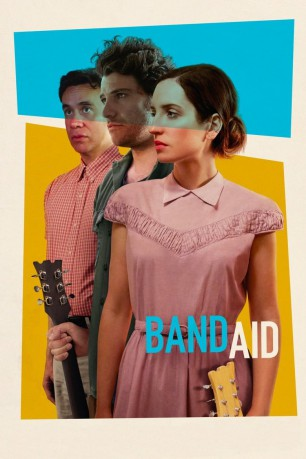

#8242 Band Aid
 
 IMDB-Wertung: 6.6 / 10
IMDB-Wertung: 6.6 / 10  Tomatometer: 85
Tomatometer: 85  Metascore: 67
Metascore: 67 
Anna (Zoe Lister-Jones) und Ben (Adam Pally) führen eine Ehe, deren streitlose Tage endgültig vorbei sind. Die Kreativköpfe wollen nicht so recht erwachsen werden und hangeln sich mehr schlecht als recht durchs Leben. Kurz vor der endgültigen Trennung kommt schließlich der rettende Einfall: Sie beginnen Songs zu schreiben, um ihre Meinungsverschiedenheiten mit Musik auszutragen. Und mithilfe ihres Nachbarn Dave (Fred Arminsen) gründen sie eine erfolgreiche Garagenband.
Jahr: 2017
Dauer: 93 Minuten
FSK: 12
Land: USA Studio: IFC FilmsTonspuren: DD5.1 - ,
Untertitel:
Auflösung: 1080p (1920x808) Größe: 6297 MB
Genre: Drama, Musik, Komödie
Regisseur: Zoe Lister-Jones
Drehbuch: Zoe Lister-Jones
Soundtrack: Lucius
Darsteller:
 Zoe Lister-Jones als Anna
Zoe Lister-Jones als Anna Adam Pally als Ben
Adam Pally als Ben Susie Essman als Shirley
Susie Essman als Shirley Retta als Carol
Retta als Carol- Hannah Simone als Grace
 Ravi Patel als Bobby
Ravi Patel als Bobby- Brooklyn Decker als Candice
- Angelique Cabral als Lauren
- Majandra Delfino als Maria
 Nelson Franklin als Ned
Nelson Franklin als Ned- Vivien Lyra Blair als Isis
 Fred Armisen als Dave
Fred Armisen als Dave Colin Hanks als Uber Douche
Colin Hanks als Uber Douche- Daryl Wein als Uber Presumptouous
- Chris D'Elia als Uber Annoying
 Jamie Chung als Cassandra Diabla
Jamie Chung als Cassandra Diabla Erinn Hayes als Crystal Vichycoisse
Erinn Hayes als Crystal Vichycoisse- Gillian Zinser als Sheena
 Jesse Williams als Skyler
Jesse Williams als Skyler- Shanee Pink als Open Mic Musician
- Premjit Panicker als Uber Quiet
- Amy Pawlukiewicz als Singer (uncredited)
- Marlee Schneider als Barista (uncredited)
- Kailash Banerjee Sukhadia als Theo
- Nolan Malcolm Fink als Jimmy
- Nilu Gacek als Nilu
- Dylan Magenheim als Dylan
- Leo Jones als Leo
- Justine Menter als Party Goer
- Gordon Jones als Party Goer
- Lauren Magenheim als Party Goer
- Shima Razavi als Party Goer
- Jim Hanft als Drum Circle
- Ben Kendall als Drum Circle
- Ryan Miller als Drum Circle
- Samantha Yonack als Drum Circle
- Elisha Yaffe als Bartender
Datei: X:\2017(A-F)\Band Aid (2017, FSK12, 1920x808).mkv seit 12.02.2018
Festplatte: HD 2017(A-Z)-2018(A-F)
 Es gibt insgesamt 152 Filme in der Gruppe '2017(A-F)'
Es gibt insgesamt 152 Filme in der Gruppe '2017(A-F)'